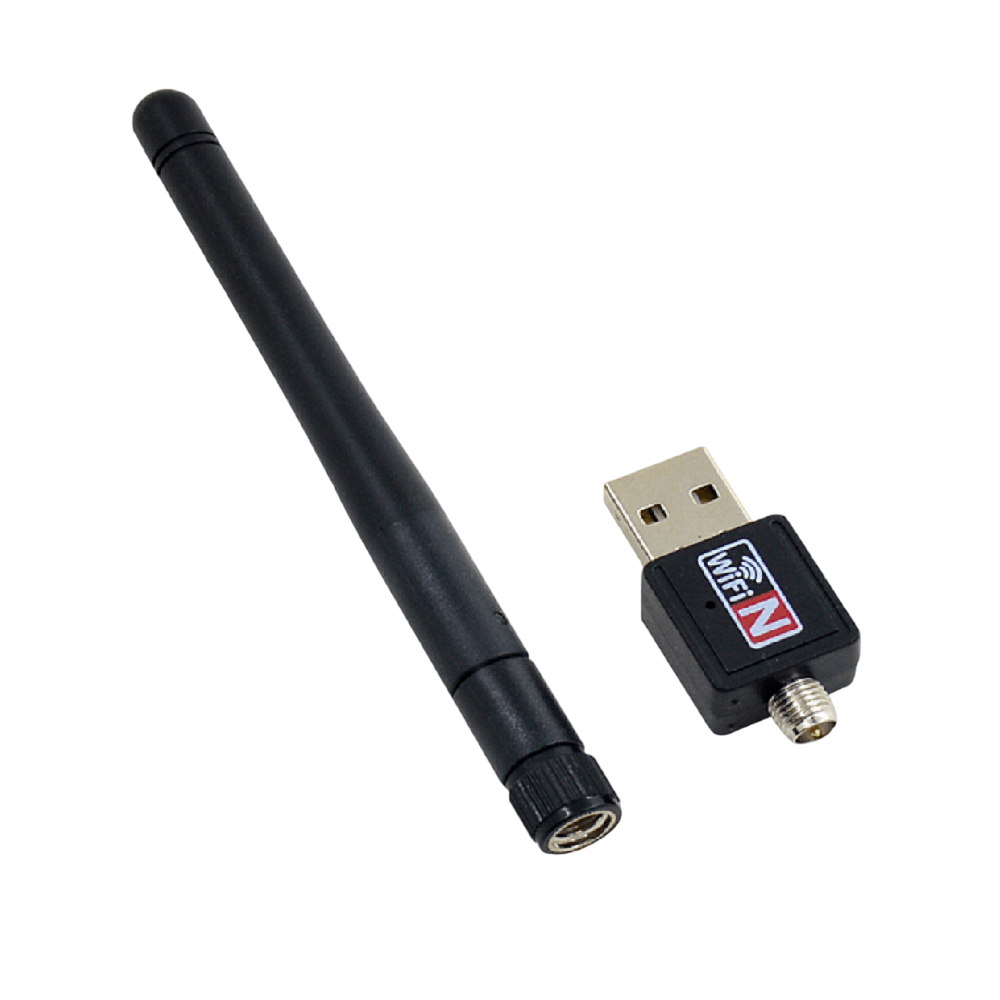
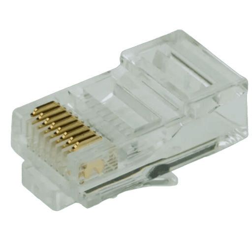
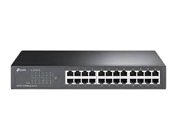
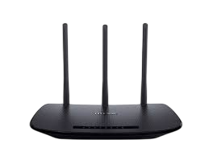

Adaptadores de red
Interfaces para vincular dispositivos a redes cableadas o inalámbricas con la mejor performance disponible.
- Ethernet multigigabit
- Wi-Fi 6/6E
- Bluetooth LE
- USB-C a Ethernet
- Módems 4G/5G
Medios de transmisión
Selección según distancia, ruido electromagnético y velocidad requerida por cada segmento de red.
- Cables UTP/STP categoría 6 y 6A
- Cable coaxial para CCTV y enlaces heredados
- Fibra óptica monomodo y multimodo

Conectores
Terminaciones certificadas que aseguran baja pérdida y facilitan tareas de mantenimiento.
- RJ-45 y RJ-11
- Conectores ST, SC, LC
- Conectores BNC y adaptadores

Switch
Equipo central que gestiona el tráfico local, con opciones para administración remota y alimentación PoE.
- Switches gestionables y no gestionables
- Modelos capa 2 y capa 3
- Versiones con PoE/PoE+

Hub
Recursos para laboratorios y pruebas de red, manteniendo compatibilidad con equipos legacy.

Router
Dispositivos para administrar tráfico WAN, segmentar la red y aplicar políticas de seguridad.
- Asignación de direcciones IP y DHCP
- Firewalls integrados y VPN
- Wi-Fi de alta cobertura y control parental
Repetidor Wi-Fi
Extensores que amplifican la señal en zonas con poca cobertura para asegurar continuidad en toda la planta.